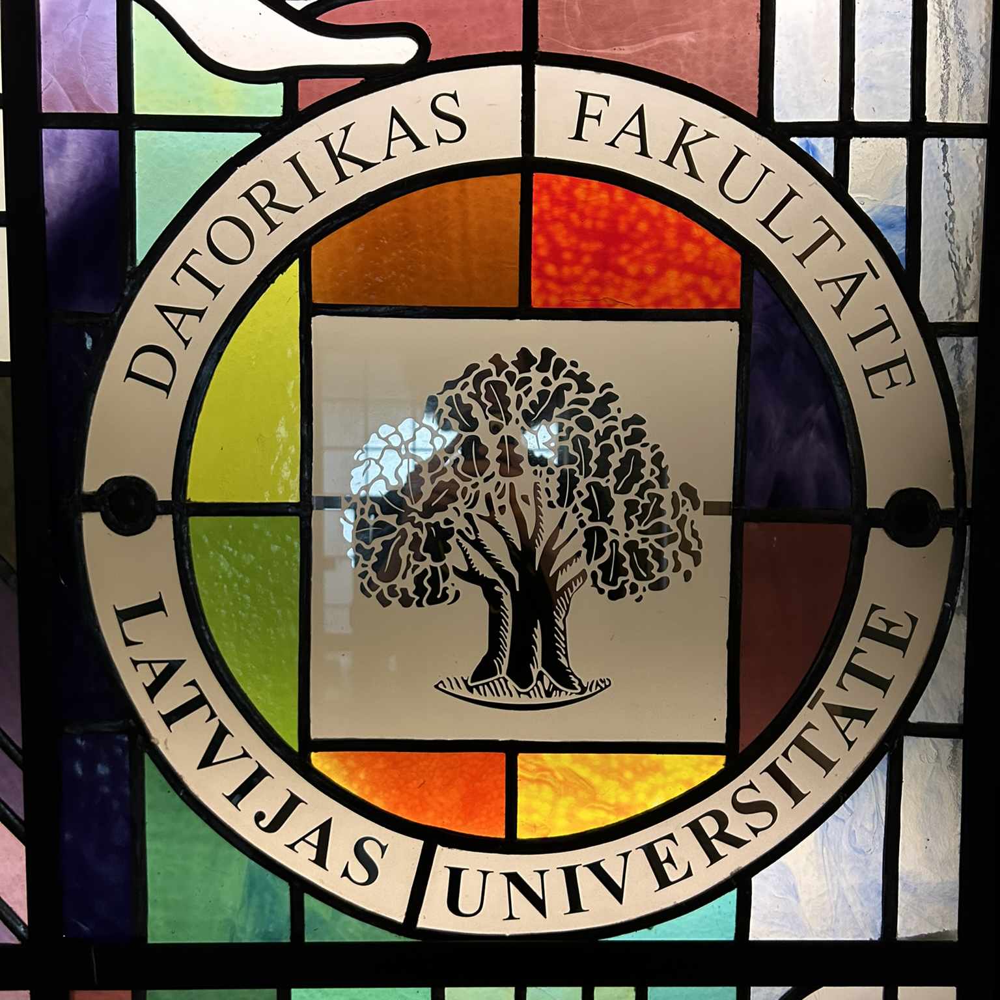

Foto: Reinis Odītis, LU DF vitrāža
Cēloņi un sekas
Darba vietas meklējumi nesekmējās viegli, jo lielākā daļa darba devēju pieprasa izglītību vai pieredzi. Trīs nedēļas pēc studiju pamešanas nebiju saņēmis nevienu atbildi, kad manās rokās nonāca interesants piedāvājums - sekretāra amats Datorikas fakultātē.
Sākumā gan šķita, ka sekretāra amats nebija tas, ko vēlos, taču tajā brīdī īsti citas reālas opcijas nebija un atsaucos uz piedāvājumu.
2021. gada jūnijā sāku savas darba gaitas kā fakultātes sekretārs Latvijas Universitātes Datorikas fakultātē.